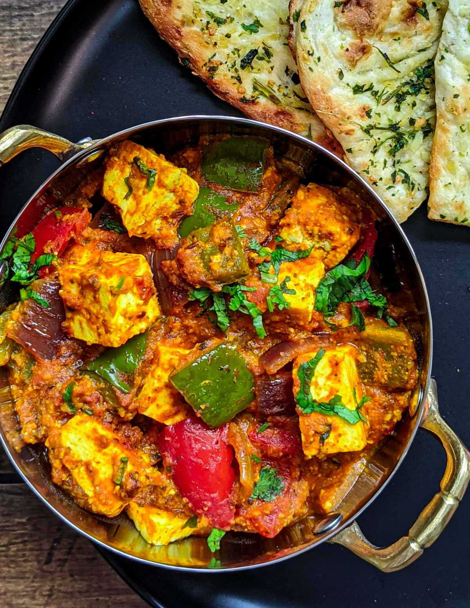
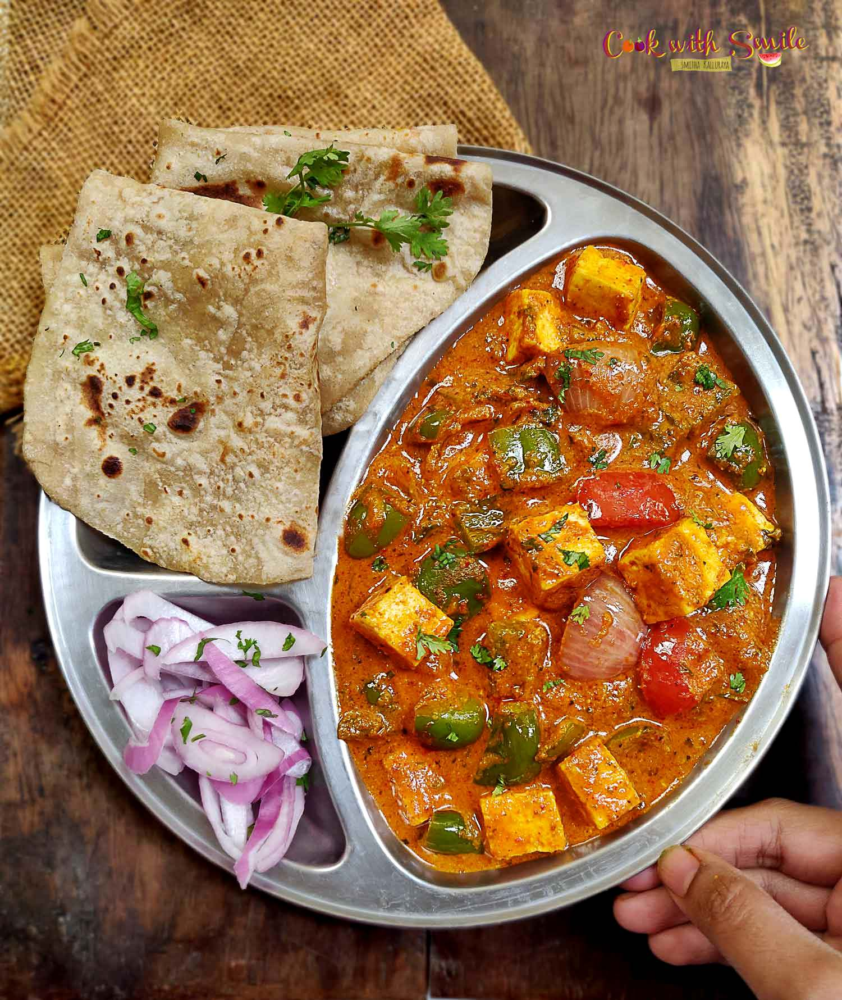
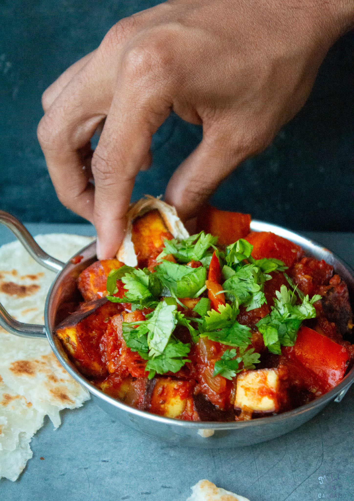
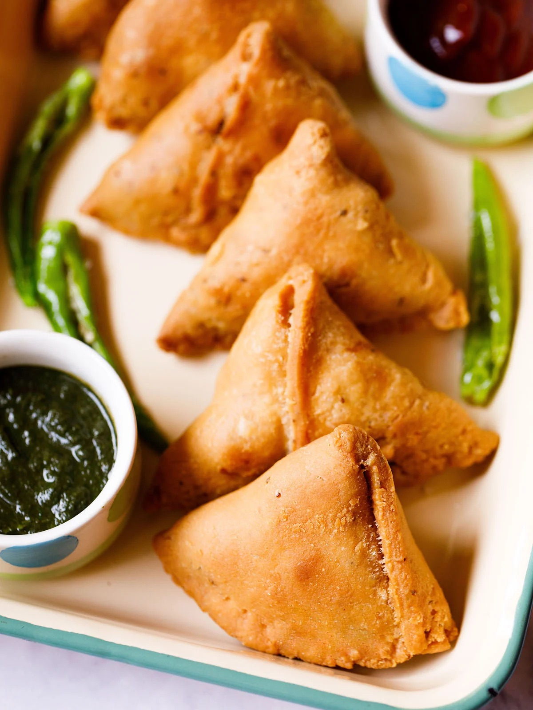
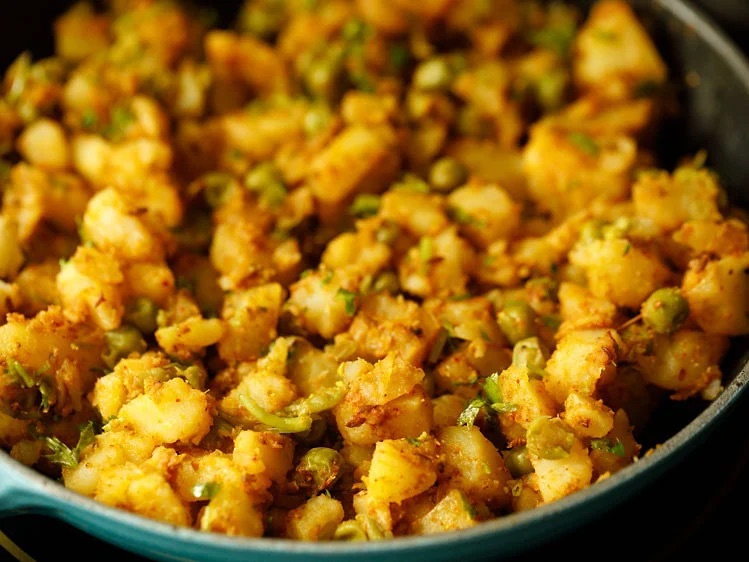
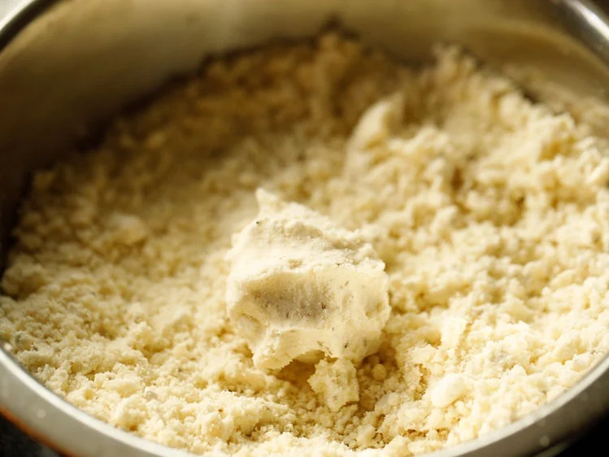
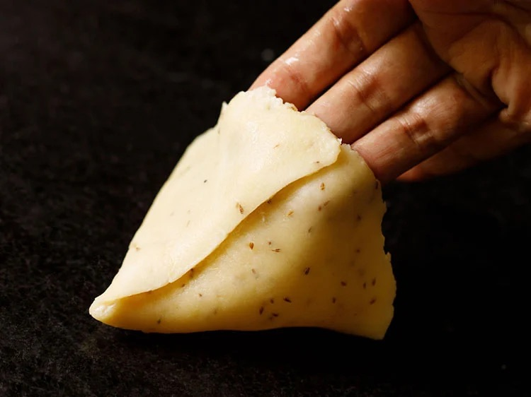

Double Chocolate Cookies
Origin: Michigan Source: Family Recipe Category: Dessert
My mother learned to make these cookies at a baking camp in Bangalore and has tweaked the recipe to fit the taste buds of her daughters. They are extremely sugary so the salt helps to balance it. Note, these cookies are best eaten very quickly.
Recipe Ingredients
- Unsalted butter
- Granulated Sugar
- Packed light or dark brown sugar
- Large egg
- Pure vanilla extract
- Semi-sweet chocolate chunks (melted)
- All-purpose flour
- Natural unsweetened cocoa powder
- Baking soda
- Salt
- Semi-sweet chocolate chunks
Recipe Steps
- In a mixing bowl cream together the butter, granulated sugar, and brown sugar
- Add the egg and vanilla extract and beat well
- Add the melted chocolate
- In a separate bowl combine the flour, baking soda, cocoa powder and salt
- Combine the wet and dry ingredients
- Add the unmelted chocolate chunks.
- Form 15 cookies and place on a baking sheet.
- Cook for 12 to 13 minutes at 350 degrees.
Additional Food images


Kadai Paneer
Origin: India Source: Cookbook Recipe Category: Main course
My mother modified this recipe over the years to make it to perfection. It's what we have on special occasions in our home. The tangy sweet and spicy flavors can be blended excellently with some Naan.
Recipe Ingredients
- 2 tbsp coriander seeds
- 2 tsp cumin
- 3 dried red chilli
- 2 tbsp oil
- 5 cloves garlic
- 1 inch ginger
- 2 onion
- 4 tomatos
- Paneer cubes chopped
- Bell Pepper chopped
- ½ tsp turmeric
- 1 tsp chilli powder
- 1 tbsp kadai masala
- 2 tbsp cream
Recipe Steps
- Firstly, to prepare kadai masala, in a pan take 2 tbsp coriander seeds, 2 tsp cumin, 2 tsp fennel, 3 dried red chilli, 3 dried red chilli and 2 tsp pepper.
- Dry roast on low flame until the spices turn aromatic.
- Cool completely, and grind to a coarse powder.
- To prepare the sabzi, in a kadai heat 2 tbsp oil, 2 tsp ghee and saute 1 tsp cumin until it turns aromatic.
- Now add 5 cloves garlic, 1 inch ginger, 2 onion and saute until the onions turn golden brown.
- Further keeping the flame low, add ½ tsp turmeric, 1 tsp chilli powder, 1 tbsp kadai masala, 1 tsp salt.
- Saute on low flame until the spices turn aromatic.
- Now add 3 tomato and saute until the tomato turn soft and mushy.
- Continue to cook until the oil separates from the sides.
- Further, in a pan take 2 tsp oil. add onion, capsicum, tomato, paneer and 1 tsp garam masala.
- Stir fry on high flame until the vegetables turn crunchy.
- Transfer the stir-fried vegetables, and add half a cup of water.
- Mix well and cook for 2 minutes.
Additional Food images



Samosa
Origin: India Source: Website blog Category: Snack Samosas are pyramid shaped classic Indian snack best enjoyed with a cup of chai (tea). It can be dipped in sweet and spicy chutneys. Relish it in the evening while it rains outside.
Recipe Ingredients
- 2 cups all purpose flour
- 1 teaspoon ajwain carom seeds
- 1/4 teaspoon salt
- water to knead the dough, around 6 tablespoons
- 3-4 medium potatoes 500-550 grams
- 1 teaspoon cumin seeds
- 1 teaspoon fennel seeds
- 2 teaspoons crushed coriander seeds
- 1 teaspoon finely chopped ginger
- 1 green chili chopped
- 1/4 teaspoon hing asafoetida
- 1/2 cup green peas
- 1 teaspoon coriander powder
- 1/2 teaspoon garam masala
- 1/2 teaspoon amchur dried mango powder
- 1/4 teaspoon red chili powder or add more to taste
- 3/4 teaspoon salt or to taste
Recipe Steps
- For the filling, boil potatoes until done.
- Peel the skin and them mash the potatoes. Set aside. Heat 2 tablespoons of oil in a pan on medium heat. Once the oil is hot, add the cumin seeds, fennel seeds and crushed coriander seeds.
- Let the seeds sizzle for few seconds and then add the chopped ginger, green chili and hing. Cook for 1 minute.
- Add the boiled & mashed potatoes and green peas to the pan. Mix everything together. I use my potato masher to combine the spices and seasonings well with the potatoes and peas.
- Add the coriander powder, garam masala, amchur, red chili powder and salt. Mix to combine. Once it's all well incorporated, remove pan from heat and let the filling cool down a bit.
- Next make the samosa dough using oil by kneading the dough
- Make triangle shaped pockets with the dough, add the filling and close the dough.
- Deep fry in oil until the samosas turn golden brown
Additional Food images


